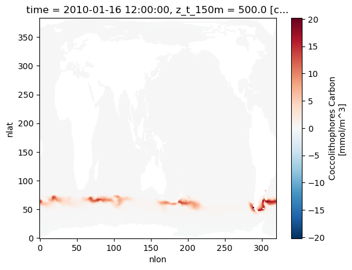
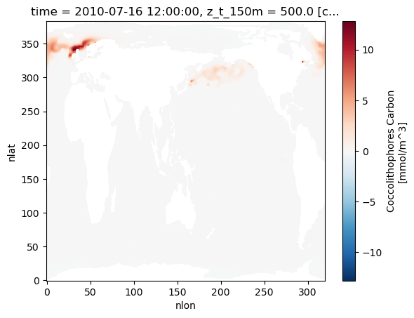
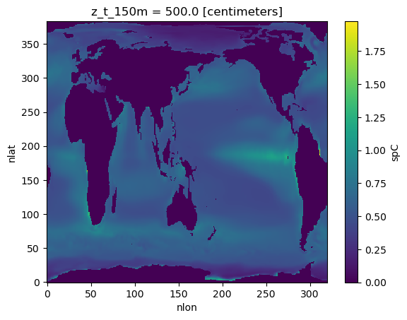
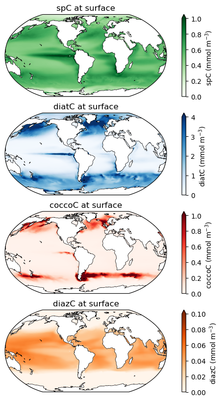
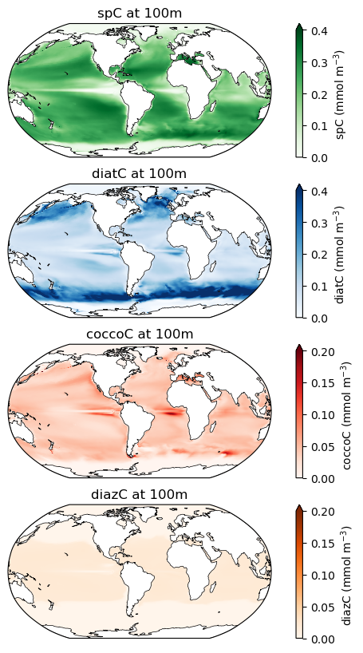
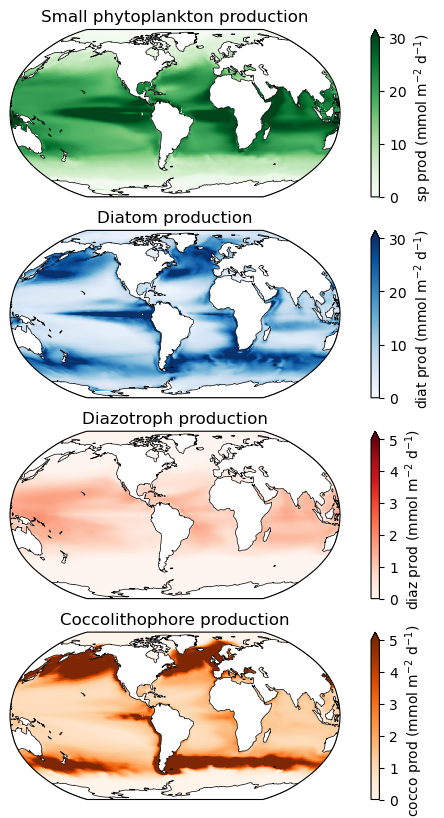
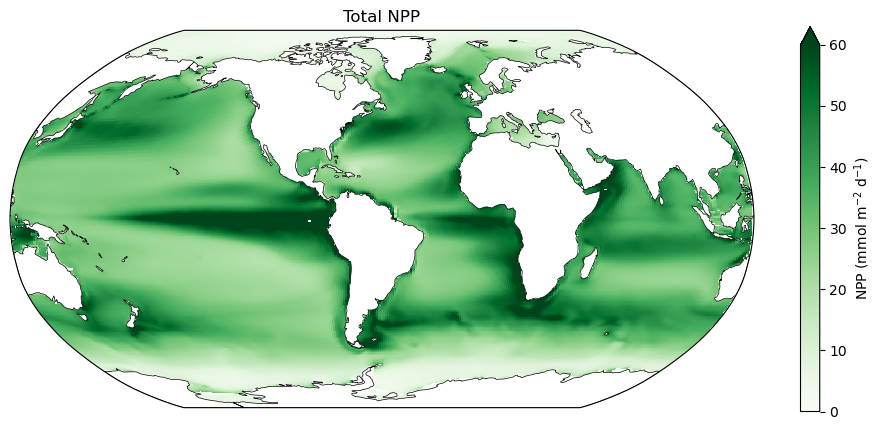
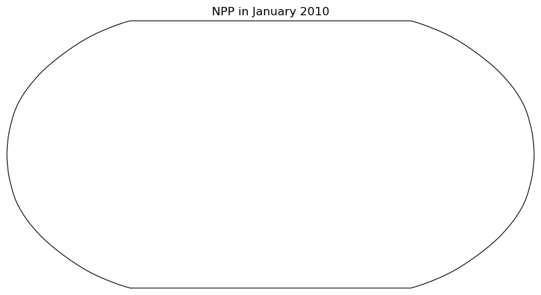
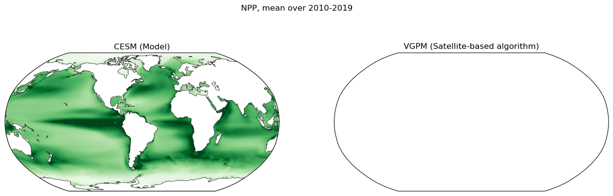

Phytoplankton biomass
/scientific-illustrations-by-kristen/images/cocco_in_blue_v2-lc467.png)
A coccolithophore, a type of phytoplankton. Art credit: Kristen Krumhardt
Overview
Phytoplankton are single-celled, photosynthesizing organisms found throughout the global ocean. Though there are many different species of phytoplankton, CESM-MARBL groups them into four categories called functional types: small phytoplankton, diatoms (which build silica-based shells), coccolithophores (which build calcium carbonate-based shells), and diazotrophs (which fix nitrogen). In this notebook, we evaluate the biomass and total production of these phytoplankton in different areas, as modeled by CESM-MARBL.
General setup
Subsetting
Taking a quick look
Processing - long-term mean
Mapping biomass at different depths
Mapping productivity
Compare NPP to satellite observations
Prerequisites
Concepts |
Importance |
Notes |
|---|---|---|
Necessary |
||
Necessary |
||
Helpful |
||
Helpful |
Time to learn: 30 min
Imports
import xarray as xr
import glob
import numpy as np
import matplotlib.pyplot as plt
import cartopy
import cartopy.crs as ccrs
import pop_tools
from dask.distributed import LocalCluster
import s3fs
import netCDF4
from datetime import datetime
from module import adjust_pop_grid
/home/runner/miniconda3/envs/ocean-bgc-cookbook-dev/lib/python3.13/site-packages/pop_tools/__init__.py:4: UserWarning: pkg_resources is deprecated as an API. See https://setuptools.pypa.io/en/latest/pkg_resources.html. The pkg_resources package is slated for removal as early as 2025-11-30. Refrain from using this package or pin to Setuptools<81.
from pkg_resources import DistributionNotFound, get_distribution
General setup (see intro notebooks for explanations)
Connect to cluster
cluster = LocalCluster()
client = cluster.get_client()
Bring in POP grid utilities
ds_grid = pop_tools.get_grid('POP_gx1v7')
lons = ds_grid.TLONG
lats = ds_grid.TLAT
depths = ds_grid.z_t * 0.01
Load the data
jetstream_url = 'https://js2.jetstream-cloud.org:8001/'
s3 = s3fs.S3FileSystem(anon=True, client_kwargs=dict(endpoint_url=jetstream_url))
# Generate a list of all files in CESM folder
s3path = 's3://pythia/ocean-bgc/cesm/g.e22.GOMIPECOIAF_JRA-1p4-2018.TL319_g17.4p2z.002branch/ocn/proc/tseries/month_1/*'
remote_files = s3.glob(s3path)
# Open all files from folder
fileset = [s3.open(file) for file in remote_files]
# Open with xarray
ds = xr.open_mfdataset(fileset, data_vars="minimal", coords='minimal', compat="override", parallel=True,
drop_variables=["transport_components", "transport_regions", 'moc_components'], decode_times=True)
ds
<xarray.Dataset> Size: 28GB
Dimensions: (nlat: 384, nlon: 320, time: 120, z_t: 60,
z_t_150m: 15)
Coordinates:
TLAT (nlat, nlon) float64 983kB dask.array<chunksize=(384, 320), meta=np.ndarray>
TLONG (nlat, nlon) float64 983kB dask.array<chunksize=(384, 320), meta=np.ndarray>
* time (time) object 960B 2010-01-16 12:00:00 .....
* z_t (z_t) float32 240B 500.0 ... 5.375e+05
* z_t_150m (z_t_150m) float32 60B 500.0 ... 1.45e+04
Dimensions without coordinates: nlat, nlon
Data variables: (12/45)
FG_CO2 (time, nlat, nlon) float32 59MB dask.array<chunksize=(60, 192, 160), meta=np.ndarray>
Fe (time, z_t, nlat, nlon) float32 4GB dask.array<chunksize=(30, 15, 96, 80), meta=np.ndarray>
NO3 (time, z_t, nlat, nlon) float32 4GB dask.array<chunksize=(30, 15, 96, 80), meta=np.ndarray>
PO4 (time, z_t, nlat, nlon) float32 4GB dask.array<chunksize=(30, 15, 96, 80), meta=np.ndarray>
POC_FLUX_100m (time, nlat, nlon) float32 59MB dask.array<chunksize=(60, 192, 160), meta=np.ndarray>
SALT (time, z_t, nlat, nlon) float32 4GB dask.array<chunksize=(30, 15, 96, 80), meta=np.ndarray>
... ...
sp_Fe_lim_Cweight_avg_100m (time, nlat, nlon) float32 59MB dask.array<chunksize=(60, 192, 160), meta=np.ndarray>
sp_Fe_lim_surf (time, nlat, nlon) float32 59MB dask.array<chunksize=(60, 192, 160), meta=np.ndarray>
sp_N_lim_Cweight_avg_100m (time, nlat, nlon) float32 59MB dask.array<chunksize=(60, 192, 160), meta=np.ndarray>
sp_N_lim_surf (time, nlat, nlon) float32 59MB dask.array<chunksize=(60, 192, 160), meta=np.ndarray>
sp_P_lim_Cweight_avg_100m (time, nlat, nlon) float32 59MB dask.array<chunksize=(60, 192, 160), meta=np.ndarray>
sp_P_lim_surf (time, nlat, nlon) float32 59MB dask.array<chunksize=(60, 192, 160), meta=np.ndarray>Subsetting
variables =['diatC', 'coccoC','spC','diazC',
'photoC_TOT_zint',
'photoC_sp_zint','photoC_diat_zint',
'photoC_diaz_zint','photoC_cocco_zint']
keep_vars=['z_t','z_t_150m','dz','time_bound', 'time', 'TAREA','TLAT','TLONG'] + variables
ds = ds.drop_vars([v for v in ds.variables if v not in keep_vars])
Taking a quick look
Let’s plot the biomass of coccolithophores as a first look. These plots show snapshots six months apart - note the difference between seasons! Also take a look at the increased concentrations of coccolithophores in the Southern Ocean during Southern-hemisphere summer; the increased concentrations of calcite caused by these plankton building calcite shells leads to this region being known as the Great Calcite Belt.
ds.coccoC.isel(time=0,z_t_150m=0).plot()
<matplotlib.collections.QuadMesh at 0x7f7cbc435550>

ds.coccoC.isel(time=6,z_t_150m=0).plot()
<matplotlib.collections.QuadMesh at 0x7f7cbc36ac10>

Processing - long-term mean
Pull in the function we defined in the nutrients notebook…
def year_mean(ds):
"""
Properly convert monthly data to annual means, taking into account month lengths.
Source: https://ncar.github.io/esds/posts/2021/yearly-averages-xarray/
"""
# Make a DataArray with the number of days in each month, size = len(time)
month_length = ds.time.dt.days_in_month
# Calculate the weights by grouping by 'time.year'
weights = (
month_length.groupby("time.year") / month_length.groupby("time.year").sum()
)
# Test that the sum of the year for each season is 1.0
np.testing.assert_allclose(weights.groupby("time.year").sum().values, np.ones((len(ds.groupby("time.year")), )))
# Calculate the weighted average
return (ds * weights).groupby("time.year").sum(dim="time")
Take the long-term mean of our data set. We process monthly to annual with our custom function, then use xarray’s built-in .mean() function to process from annual data to a single mean over time, since each year is the same length.
ds_ann = year_mean(ds)
ds = ds_ann.mean("year")
ds['spC'].isel(z_t_150m=0).plot()
<matplotlib.collections.QuadMesh at 0x7f7cb4cf8550>

Mapping biomass at different depths
Note the different colorbar scales on each of these maps!
Phytoplankton biomass at the surface
######
fig = plt.figure(figsize=(8,10))
ax = fig.add_subplot(4,1,1, projection=ccrs.Robinson(central_longitude=305.0))
# spC stands for "small phytoplankton carbon"
ax.set_title('spC at surface', fontsize=12)
lon, lat, field = adjust_pop_grid(lons, lats, ds.spC.isel(z_t_150m=0))
pc=ax.pcolormesh(lon, lat, field, cmap='Greens',vmin=0,vmax=1,transform=ccrs.PlateCarree())
cbar1 = fig.colorbar(pc, ax=ax,extend='max',label='spC (mmol m$^{-3}$)')
land = cartopy.feature.NaturalEarthFeature('physical', 'land', scale='110m', edgecolor='k', facecolor='white', linewidth=0.5)
ax.add_feature(land)
ax = fig.add_subplot(4,1,2, projection=ccrs.Robinson(central_longitude=305.0))
# diatC stands for "diatom carbon"
ax.set_title('diatC at surface', fontsize=12)
lon, lat, field = adjust_pop_grid(lons, lats, ds.diatC.isel(z_t_150m=0))
pc=ax.pcolormesh(lon, lat, field, cmap='Blues',vmin=0,vmax=4,transform=ccrs.PlateCarree())
cbar1 = fig.colorbar(pc, ax=ax,extend='max',label='diatC (mmol m$^{-3}$)')
land = cartopy.feature.NaturalEarthFeature('physical', 'land', scale='110m', edgecolor='k', facecolor='white', linewidth=0.5)
ax.add_feature(land)
ax = fig.add_subplot(4,1,3, projection=ccrs.Robinson(central_longitude=305.0))
# coccoC stands for "coccolithophore carbon"
ax.set_title('coccoC at surface', fontsize=12)
lon, lat, field = adjust_pop_grid(lons, lats, ds.coccoC.isel(z_t_150m=0))
pc=ax.pcolormesh(lon, lat, field, cmap='Reds',vmin=0,vmax=1,transform=ccrs.PlateCarree())
cbar1 = fig.colorbar(pc, ax=ax,extend='max',label='coccoC (mmol m$^{-3}$)')
land = cartopy.feature.NaturalEarthFeature('physical', 'land', scale='110m', edgecolor='k', facecolor='white', linewidth=0.5)
ax.add_feature(land)
ax = fig.add_subplot(4,1,4, projection=ccrs.Robinson(central_longitude=305.0))
# diazC stands for "diazotroph carbon"
ax.set_title('diazC at surface', fontsize=12)
lon, lat, field = adjust_pop_grid(lons, lats, ds.diazC.isel(z_t_150m=0))
pc=ax.pcolormesh(lon, lat, field, cmap='Oranges',vmin=0,vmax=0.1,transform=ccrs.PlateCarree())
cbar1 = fig.colorbar(pc, ax=ax,extend='max',label='diazC (mmol m$^{-3}$)')
land = cartopy.feature.NaturalEarthFeature('physical', 'land', scale='110m', edgecolor='k', facecolor='white', linewidth=0.5)
ax.add_feature(land)
<cartopy.mpl.feature_artist.FeatureArtist at 0x7f7c9cd54550>

Phytoplankton biomass at 100m
######
fig = plt.figure(figsize=(8,10))
ax = fig.add_subplot(4,1,1, projection=ccrs.Robinson(central_longitude=305.0))
ax.set_title('spC at 100m', fontsize=12)
lon, lat, field = adjust_pop_grid(lons, lats, ds.spC.isel(z_t_150m=9))
pc=ax.pcolormesh(lon, lat, field, cmap='Greens',vmin=0,vmax=0.4,transform=ccrs.PlateCarree())
cbar1 = fig.colorbar(pc, ax=ax,extend='max',label='spC (mmol m$^{-3}$)')
land = cartopy.feature.NaturalEarthFeature('physical', 'land', scale='110m', edgecolor='k', facecolor='white', linewidth=0.5)
ax.add_feature(land)
ax = fig.add_subplot(4,1,2, projection=ccrs.Robinson(central_longitude=305.0))
ax.set_title('diatC at 100m', fontsize=12)
lon, lat, field = adjust_pop_grid(lons, lats, ds.diatC.isel(z_t_150m=9))
pc=ax.pcolormesh(lon, lat, field, cmap='Blues',vmin=0,vmax=0.4,transform=ccrs.PlateCarree())
cbar1 = fig.colorbar(pc, ax=ax,extend='max',label='diatC (mmol m$^{-3}$)')
land = cartopy.feature.NaturalEarthFeature('physical', 'land', scale='110m', edgecolor='k', facecolor='white', linewidth=0.5)
ax.add_feature(land)
ax = fig.add_subplot(4,1,3, projection=ccrs.Robinson(central_longitude=305.0))
ax.set_title('coccoC at 100m', fontsize=12)
lon, lat, field = adjust_pop_grid(lons, lats, ds.coccoC.isel(z_t_150m=9))
pc=ax.pcolormesh(lon, lat, field, cmap='Reds',vmin=0,vmax=0.2,transform=ccrs.PlateCarree())
cbar1 = fig.colorbar(pc, ax=ax,extend='max',label='coccoC (mmol m$^{-3}$)')
land = cartopy.feature.NaturalEarthFeature('physical', 'land', scale='110m', edgecolor='k', facecolor='white', linewidth=0.5)
ax.add_feature(land)
ax = fig.add_subplot(4,1,4, projection=ccrs.Robinson(central_longitude=305.0))
ax.set_title('diazC at 100m', fontsize=12)
lon, lat, field = adjust_pop_grid(lons, lats, ds.diazC.isel(z_t_150m=9))
pc=ax.pcolormesh(lon, lat, field, cmap='Oranges',vmin=0,vmax=0.2,transform=ccrs.PlateCarree())
cbar1 = fig.colorbar(pc, ax=ax,extend='max',label='diazC (mmol m$^{-3}$)')
land = cartopy.feature.NaturalEarthFeature('physical', 'land', scale='110m', edgecolor='k', facecolor='white', linewidth=0.5)
ax.add_feature(land)
<cartopy.mpl.feature_artist.FeatureArtist at 0x7f7c9c42bed0>

Mapping productivity
fig = plt.figure(figsize=(8,10))
ax = fig.add_subplot(4,1,1, projection=ccrs.Robinson(central_longitude=305.0))
ax.set_title('Small phytoplankton production', fontsize=12)
lon, lat, field = adjust_pop_grid(lons, lats, ds.photoC_sp_zint * 864.)
pc=ax.pcolormesh(lon, lat, field, cmap='Greens',vmin=0,vmax=30,transform=ccrs.PlateCarree())
land = cartopy.feature.NaturalEarthFeature('physical', 'land', scale='110m', edgecolor='k', facecolor='white', linewidth=0.5)
ax.add_feature(land)
cbar1 = fig.colorbar(pc, ax=ax,extend='max',label='sp prod (mmol m$^{-2}$ d$^{-1}$)')
ax = fig.add_subplot(4,1,2, projection=ccrs.Robinson(central_longitude=305.0))
ax.set_title('Diatom production', fontsize=12)
lon, lat, field = adjust_pop_grid(lons, lats, ds.photoC_diat_zint * 864.)
pc=ax.pcolormesh(lon, lat, field, cmap='Blues',vmin=0,vmax=30,transform=ccrs.PlateCarree())
land = cartopy.feature.NaturalEarthFeature('physical', 'land', scale='110m', edgecolor='k', facecolor='white', linewidth=0.5)
ax.add_feature(land)
cbar1 = fig.colorbar(pc, ax=ax,extend='max',label='diat prod (mmol m$^{-2}$ d$^{-1}$)')
ax = fig.add_subplot(4,1,3, projection=ccrs.Robinson(central_longitude=305.0))
ax.set_title('Diazotroph production', fontsize=12)
lon, lat, field = adjust_pop_grid(lons, lats, ds.photoC_diaz_zint * 864.)
pc=ax.pcolormesh(lon, lat, field, cmap='Reds',vmin=0,vmax=5,transform=ccrs.PlateCarree())
land = cartopy.feature.NaturalEarthFeature('physical', 'land', scale='110m', edgecolor='k', facecolor='white', linewidth=0.5)
ax.add_feature(land)
cbar1 = fig.colorbar(pc, ax=ax,extend='max',label='diaz prod (mmol m$^{-2}$ d$^{-1}$)')
ax = fig.add_subplot(4,1,4, projection=ccrs.Robinson(central_longitude=305.0))
ax.set_title('Coccolithophore production', fontsize=12)
lon, lat, field = adjust_pop_grid(lons, lats, ds.photoC_cocco_zint * 864.)
pc=ax.pcolormesh(lon, lat, field, cmap='Oranges',vmin=0,vmax=5,transform=ccrs.PlateCarree())
land = cartopy.feature.NaturalEarthFeature('physical', 'land', scale='110m', edgecolor='k', facecolor='white', linewidth=0.5)
ax.add_feature(land)
cbar1 = fig.colorbar(pc, ax=ax,extend='max',label='cocco prod (mmol m$^{-2}$ d$^{-1}$)');

fig = plt.figure(figsize=(12,5))
ax = fig.add_subplot(1,1,1, projection=ccrs.Robinson(central_longitude=305.0))
ax.set_title('Total NPP', fontsize=12)
lon, lat, field = adjust_pop_grid(lons, lats, ds.photoC_TOT_zint*864.)
pc=ax.pcolormesh(lon, lat, field, cmap='Greens',vmin=0,vmax=60,transform=ccrs.PlateCarree())
land = cartopy.feature.NaturalEarthFeature('physical', 'land', scale='110m', edgecolor='k', facecolor='white', linewidth=0.5)
ax.add_feature(land)
cbar1 = fig.colorbar(pc, ax=ax,extend='max',label='NPP (mmol m$^{-2}$ d$^{-1}$)');

Globally integrated NPP
def global_mean(ds, ds_grid, compute_vars, normalize=True, include_ms=False):
"""
Compute the global mean on a POP dataset.
Return computed quantity in conventional units.
"""
other_vars = list(set(ds.variables) - set(compute_vars))
# note TAREA is in cm^2, which affects units
if include_ms: # marginal seas!
surface_mask = ds_grid.TAREA.where(ds_grid.KMT > 0).fillna(0.)
else:
surface_mask = ds_grid.TAREA.where(ds_grid.REGION_MASK > 0).fillna(0.)
masked_area = {
v: surface_mask.where(ds[v].notnull()).fillna(0.)
for v in compute_vars
}
with xr.set_options(keep_attrs=True):
dso = xr.Dataset({
v: (ds[v] * masked_area[v]).sum(['nlat', 'nlon'])
for v in compute_vars
})
if normalize:
dso = xr.Dataset({
v: dso[v] / masked_area[v].sum(['nlat', 'nlon'])
for v in compute_vars
})
return dso
ds_glb = global_mean(ds, ds_grid, variables,normalize=False).compute()
# convert from nmol C/s to Pg C/yr
nmols_to_PgCyr = 1e-9 * 12. * 1e-15 * 365. * 86400.
for v in variables:
ds_glb[v] = ds_glb[v] * nmols_to_PgCyr
ds_glb[v].attrs['units'] = 'Pg C yr$^{-1}$'
ds_glb
<xarray.Dataset> Size: 580B
Dimensions: (z_t_150m: 15)
Coordinates:
* z_t_150m (z_t_150m) float32 60B 500.0 1.5e+03 ... 1.45e+04
Data variables:
diatC (z_t_150m) float64 120B 1.474e+03 1.411e+03 ... 27.73
coccoC (z_t_150m) float64 120B 163.5 160.3 150.0 ... 7.543 5.085
spC (z_t_150m) float64 120B 763.9 747.5 708.3 ... 60.17 42.67
diazC (z_t_150m) float64 120B 35.42 35.27 ... 0.2501 -0.07041
photoC_TOT_zint float64 8B 53.26
photoC_sp_zint float64 8B 27.72
photoC_diat_zint float64 8B 21.14
photoC_diaz_zint float64 8B 1.003
photoC_cocco_zint float64 8B 3.399Comparing to NPP satellite data
We load in a satellite-derived estimate of NPP, calculated with the VGPM algorithm (Behrenfeld and Falkowski, 1997). This data can be found at this website; we’ve re-uploaded a portion of it for easier access. It was originally provided in the format of HDF4 files; we have converted these to NetCDF files to make reading in data from the cloud more straightforward, but some additional processing is still required to format the time and space coordinates correctly before we can work with the data.
s3path = 's3://pythia/ocean-bgc/obs/vgpm/*.nc'
remote_files = s3.glob(s3path)
# Open all files from bucket
fileset = [s3.open(file) for file in remote_files]
Let’s try reading in one of these files to see what the format looks like.
test_ds = xr.open_dataset(fileset[0])
test_ds
---------------------------------------------------------------------------
ValueError Traceback (most recent call last)
Cell In[19], line 1
----> 1 test_ds = xr.open_dataset(fileset[0])
3 test_ds
File ~/miniconda3/envs/ocean-bgc-cookbook-dev/lib/python3.13/site-packages/xarray/backends/api.py:668, in open_dataset(filename_or_obj, engine, chunks, cache, decode_cf, mask_and_scale, decode_times, decode_timedelta, use_cftime, concat_characters, decode_coords, drop_variables, inline_array, chunked_array_type, from_array_kwargs, backend_kwargs, **kwargs)
665 kwargs.update(backend_kwargs)
667 if engine is None:
--> 668 engine = plugins.guess_engine(filename_or_obj)
670 if from_array_kwargs is None:
671 from_array_kwargs = {}
File ~/miniconda3/envs/ocean-bgc-cookbook-dev/lib/python3.13/site-packages/xarray/backends/plugins.py:194, in guess_engine(store_spec)
186 else:
187 error_msg = (
188 "found the following matches with the input file in xarray's IO "
189 f"backends: {compatible_engines}. But their dependencies may not be installed, see:\n"
190 "https://docs.xarray.dev/en/stable/user-guide/io.html \n"
191 "https://docs.xarray.dev/en/stable/getting-started-guide/installing.html"
192 )
--> 194 raise ValueError(error_msg)
ValueError: did not find a match in any of xarray's currently installed IO backends ['netcdf4', 'h5netcdf', 'scipy', 'gini', 'rasterio', 'zarr']. Consider explicitly selecting one of the installed engines via the ``engine`` parameter, or installing additional IO dependencies, see:
https://docs.xarray.dev/en/stable/getting-started-guide/installing.html
https://docs.xarray.dev/en/stable/user-guide/io.html
all_single_ds = []
for file in fileset:
ds_singlefile = xr.open_dataset(file)
timestr = ds_singlefile["band_data"].attrs["Start Time String"]
format_data = "%m/%d/%Y %H:%M:%S"
ds_singlefile["time"] = datetime.strptime(timestr, format_data)
all_single_ds.append(ds_singlefile)
ds_sat = xr.concat(all_single_ds, dim="time")
---------------------------------------------------------------------------
ValueError Traceback (most recent call last)
Cell In[20], line 4
1 all_single_ds = []
3 for file in fileset:
----> 4 ds_singlefile = xr.open_dataset(file)
5 timestr = ds_singlefile["band_data"].attrs["Start Time String"]
6 format_data = "%m/%d/%Y %H:%M:%S"
File ~/miniconda3/envs/ocean-bgc-cookbook-dev/lib/python3.13/site-packages/xarray/backends/api.py:668, in open_dataset(filename_or_obj, engine, chunks, cache, decode_cf, mask_and_scale, decode_times, decode_timedelta, use_cftime, concat_characters, decode_coords, drop_variables, inline_array, chunked_array_type, from_array_kwargs, backend_kwargs, **kwargs)
665 kwargs.update(backend_kwargs)
667 if engine is None:
--> 668 engine = plugins.guess_engine(filename_or_obj)
670 if from_array_kwargs is None:
671 from_array_kwargs = {}
File ~/miniconda3/envs/ocean-bgc-cookbook-dev/lib/python3.13/site-packages/xarray/backends/plugins.py:194, in guess_engine(store_spec)
186 else:
187 error_msg = (
188 "found the following matches with the input file in xarray's IO "
189 f"backends: {compatible_engines}. But their dependencies may not be installed, see:\n"
190 "https://docs.xarray.dev/en/stable/user-guide/io.html \n"
191 "https://docs.xarray.dev/en/stable/getting-started-guide/installing.html"
192 )
--> 194 raise ValueError(error_msg)
ValueError: did not find a match in any of xarray's currently installed IO backends ['netcdf4', 'h5netcdf', 'scipy', 'gini', 'rasterio', 'zarr']. Consider explicitly selecting one of the installed engines via the ``engine`` parameter, or installing additional IO dependencies, see:
https://docs.xarray.dev/en/stable/getting-started-guide/installing.html
https://docs.xarray.dev/en/stable/user-guide/io.html
ds_sat
---------------------------------------------------------------------------
NameError Traceback (most recent call last)
Cell In[21], line 1
----> 1 ds_sat
NameError: name 'ds_sat' is not defined
Now we have a time dimension! Let’s try plotting the data to see what else we need to fix.
ds_sat.band_data.isel(time=0, band=0).plot()
---------------------------------------------------------------------------
NameError Traceback (most recent call last)
Cell In[22], line 1
----> 1 ds_sat.band_data.isel(time=0, band=0).plot()
NameError: name 'ds_sat' is not defined
There are a few things going on here. The data is upside down from a more common map projection, and the spatial coordinates are a generic x and y rather than latitude and longitude. The color scale also doesn’t look right because areas like land that should be masked out are showing up as a low negative value, throwing off the positive values we actually want to see. We also have an extra band coordinate in the dataset - probably a holdover from the satellite data this product was generated from, but no longer giving us useful information. In the next block, we fix these problems.
Preliminary processing
# fix coords
ds_sat = ds_sat.rename(name_dict={"x": "lon", "y": "lat", "band_data": "NPP"})
ds_sat["lon"] = (ds_sat.lon/6 + 180) % 360
ds_sat = ds_sat.sortby(ds_sat.lon)
ds_sat["lat"] = (ds_sat.lat/6 - 90)[::-1]
# mask values
ds_sat = ds_sat.where(ds_sat.NPP != -9999.)
# get rid of extra dimensions
ds_sat = ds_sat.squeeze(dim="band", drop=True)
ds_sat = ds_sat.drop_vars("spatial_ref")
# make NPP units match previous dataset
ds_sat["NPP"] = ds_sat.NPP / 12.01
ds_sat["NPP"] = ds_sat.NPP.assign_attrs(
units="mmol m-2 day-1")
---------------------------------------------------------------------------
NameError Traceback (most recent call last)
Cell In[23], line 2
1 # fix coords
----> 2 ds_sat = ds_sat.rename(name_dict={"x": "lon", "y": "lat", "band_data": "NPP"})
3 ds_sat["lon"] = (ds_sat.lon/6 + 180) % 360
4 ds_sat = ds_sat.sortby(ds_sat.lon)
NameError: name 'ds_sat' is not defined
ds_sat
---------------------------------------------------------------------------
NameError Traceback (most recent call last)
Cell In[24], line 1
----> 1 ds_sat
NameError: name 'ds_sat' is not defined
ds_sat.NPP.isel(time=0).plot(vmin=0, vmax=60)
---------------------------------------------------------------------------
NameError Traceback (most recent call last)
Cell In[25], line 1
----> 1 ds_sat.NPP.isel(time=0).plot(vmin=0, vmax=60)
NameError: name 'ds_sat' is not defined
ds_sat
---------------------------------------------------------------------------
NameError Traceback (most recent call last)
Cell In[26], line 1
----> 1 ds_sat
NameError: name 'ds_sat' is not defined
fig = plt.figure(figsize=(12,5))
ax = fig.add_subplot(1,1,1, projection=ccrs.Robinson(central_longitude=305.0))
ax.set_title('NPP in January 2010', fontsize=12)
pc=ax.pcolormesh(ds_sat.lon, ds_sat.lat, ds_sat.NPP.isel(time=0), cmap='Greens',vmin=0,vmax=60,transform=ccrs.PlateCarree())
land = cartopy.feature.NaturalEarthFeature('physical', 'land', scale='110m', edgecolor='k', facecolor='white', linewidth=0.5)
ax.add_feature(land)
cbar1 = fig.colorbar(pc, ax=ax,extend='max',label='NPP (mmol m$^{-2}$ d$^{-1}$)');
---------------------------------------------------------------------------
NameError Traceback (most recent call last)
Cell In[27], line 5
3 ax = fig.add_subplot(1,1,1, projection=ccrs.Robinson(central_longitude=305.0))
4 ax.set_title('NPP in January 2010', fontsize=12)
----> 5 pc=ax.pcolormesh(ds_sat.lon, ds_sat.lat, ds_sat.NPP.isel(time=0), cmap='Greens',vmin=0,vmax=60,transform=ccrs.PlateCarree())
6 land = cartopy.feature.NaturalEarthFeature('physical', 'land', scale='110m', edgecolor='k', facecolor='white', linewidth=0.5)
7 ax.add_feature(land)
NameError: name 'ds_sat' is not defined

Making a comparison map
Now let’s process in time. Use the monthly to annual function that we made before.
ds_sat_ann = year_mean(ds_sat)
---------------------------------------------------------------------------
NameError Traceback (most recent call last)
Cell In[28], line 1
----> 1 ds_sat_ann = year_mean(ds_sat)
NameError: name 'ds_sat' is not defined
ds_sat_timemean = ds_sat_ann.mean("year")
---------------------------------------------------------------------------
NameError Traceback (most recent call last)
Cell In[29], line 1
----> 1 ds_sat_timemean = ds_sat_ann.mean("year")
NameError: name 'ds_sat_ann' is not defined
ds_sat_timemean
---------------------------------------------------------------------------
NameError Traceback (most recent call last)
Cell In[30], line 1
----> 1 ds_sat_timemean
NameError: name 'ds_sat_timemean' is not defined
fig = plt.figure(figsize=(16,5))
fig.suptitle("NPP, mean over 2010-2019")
ax = fig.add_subplot(1,2,1, projection=ccrs.Robinson(central_longitude=305.0))
ax.set_title('CESM (Model)', fontsize=12)
lon, lat, field = adjust_pop_grid(lons, lats, ds.photoC_TOT_zint*864.)
pc=ax.pcolormesh(lon, lat, field, cmap='Greens',vmin=0,vmax=60,transform=ccrs.PlateCarree())
land = cartopy.feature.NaturalEarthFeature('physical', 'land', scale='110m', edgecolor='k', facecolor='white', linewidth=0.5)
ax.add_feature(land)
ax = fig.add_subplot(1,2,2, projection=ccrs.Robinson(central_longitude=305.0))
ax.set_title('VGPM (Satellite-based algorithm)', fontsize=12)
pc=ax.pcolormesh(ds_sat_timemean.lon, ds_sat_timemean.lat, ds_sat_timemean.NPP, cmap='Greens',vmin=0,vmax=60,transform=ccrs.PlateCarree())
land = cartopy.feature.NaturalEarthFeature('physical', 'land', scale='110m', edgecolor='k', facecolor='white', linewidth=0.5)
ax.add_feature(land)
fig.subplots_adjust(right=0.8)
cbar_ax = fig.add_axes([0.85, 0.15, 0.02, 0.7])
fig.colorbar(pc, cax=cbar_ax, label='NPP (mmol m$^{-2}$ d$^{-1}$)')
plt.show()
---------------------------------------------------------------------------
NameError Traceback (most recent call last)
Cell In[31], line 14
12 ax = fig.add_subplot(1,2,2, projection=ccrs.Robinson(central_longitude=305.0))
13 ax.set_title('VGPM (Satellite-based algorithm)', fontsize=12)
---> 14 pc=ax.pcolormesh(ds_sat_timemean.lon, ds_sat_timemean.lat, ds_sat_timemean.NPP, cmap='Greens',vmin=0,vmax=60,transform=ccrs.PlateCarree())
15 land = cartopy.feature.NaturalEarthFeature('physical', 'land', scale='110m', edgecolor='k', facecolor='white', linewidth=0.5)
16 ax.add_feature(land)
NameError: name 'ds_sat_timemean' is not defined

And close the Dask cluster we spun up at the beginning.
cluster.close()
Summary
You’ve learned how to take a look at a few quantities related to phytoplankton in CESM, as well as processing an observation-derived dataset in a different format.
Resources and references
Sarmiento and Gruber Chapter 4: Organic Matter Production (see Phytoplankton in Section 4.2)